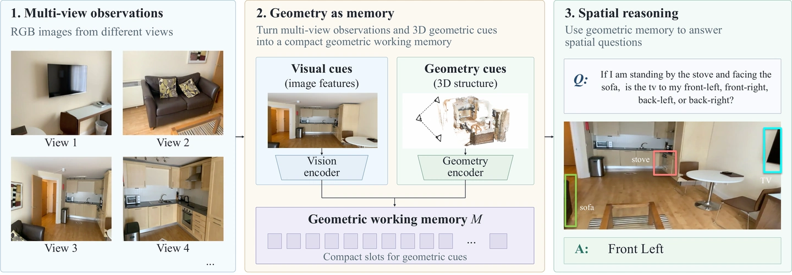
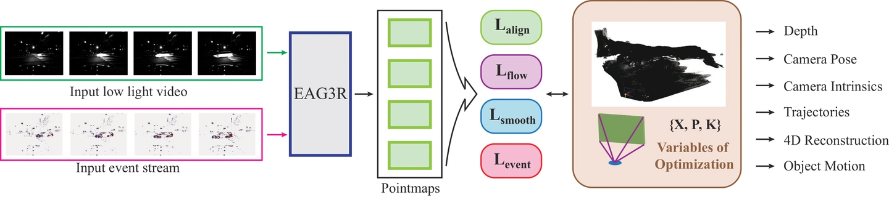
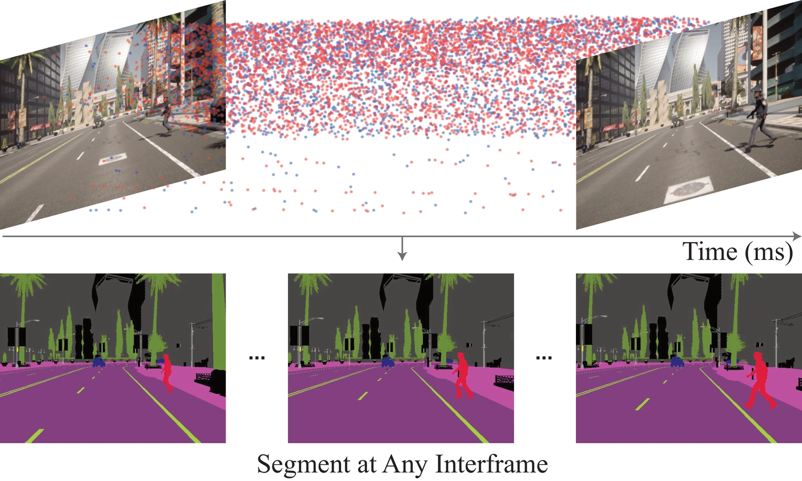
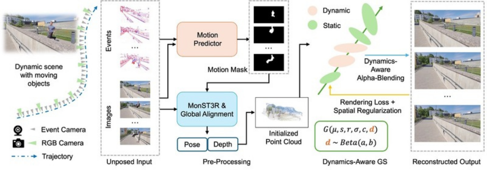
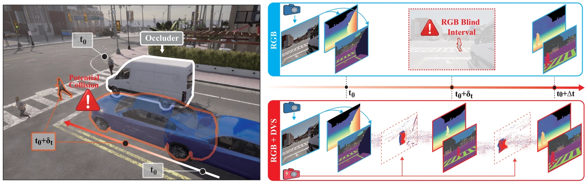

Research
View publications ↓Research now lives on the homepage. This page preserves previously shared links.
What should a robot perceive, remember, and predict to act reliably in an unfamiliar environment?
4D world models for action
I develop models that generate visual futures together with corresponding robot actions. Making geometry and motion explicit lets the predicted future guide action generation and support consistency checks before execution.
Examples: S4NDBOX
Memory across views and time
Perception in changing environments
Publications
First- and Co-first-author Work
* Equal contribution · † Project lead.
Franka Research 3 · robot demo (10×) Verifiable 4D World–Action Model for Robust Robot Control
TL;DR: Explicit 4D futures connect visual prediction with robot control and support pre-execution geometric consistency checks.

Teaser GaMe: Geometry as Memory for Multi-View Spatial Reasoning
TL;DR: Geometric working memory brings multi-view spatial evidence into vision–language reasoning.

Teaser · Figure 1 EAG3R: Event-Augmented 3D Geometry Estimation for Dynamic and Extreme-Lighting Scenes
TL;DR: RGB–event fusion recovers scene geometry under fast motion and difficult lighting, including daytime-to-nighttime transfer.

Project overview VideoSSM: Autoregressive Long Video Generation with Hybrid State-Space Memory
TL;DR: Local attention and recurrent state-space memory retain recent detail and long-range context for autoregressive video generation.

Teaser LiFR-Seg: Anytime High-Frame-Rate Segmentation via Event-Guided Propagation
TL;DR: Event-guided propagation and temporal memory keep semantic predictions up to date between RGB frames, without requiring an image at each query time.

Method overview EVSplat: Uncertainty-Aware Gaussian Splatting for Dynamic Scenes with Event Camera
TL;DR: Uncertainty-aware Gaussian splatting reconstructs dynamic scenes from event-camera observations.

Teaser LiFR v2: Completion-Augmented Event Propagation for High-Rate Dense Prediction
TL;DR: Propagation reuses observed content, event-guided completion recovers missing source support, and memory retains inferred content for later queries.
Event-Based Depth Prediction With Deep Spiking Neural Network
TL;DR: A deep spiking neural network predicts scene depth from event-camera observations.
Collaborative Work
UGG: Unified Generative Geometry Model
TL;DR: A single generative model completes RGB video, depth, and camera geometry from partial observations.
Efficient and Accurate Neural-Field Reconstruction Using Resistive Memory
TL;DR: Compressed neural fields and resistive-memory computing enable efficient reconstruction from sparse observations.
OptiGeo: Efficient Monocular Geometry for Embodied Perception in Optically Challenging Scenes
TL;DR: Bias-aware monocular geometry estimation improves 3D perception of transparent and reflective objects.
FoundationGeo: Learning Spatial Pixel-Wise Fields for Monocular Metric Geometry
TL;DR: Pixel-wise spatial calibration turns relative geometry into metric 3D predictions across cameras and domains.
Stabilizing Streaming Video Geometry via Dynamic Feature Normalization
TL;DR: Dynamic feature normalization stabilizes scale and geometry in causal streaming-video reconstruction.
Continuous-Time Digital Twin with Analog Memristive Neural Ordinary Differential Equation Solver
TL;DR: An analog memristive neural ODE solver models continuous-time dynamics for efficient digital twins.
Topology Optimization of Random Memristors for Input-Aware Dynamic SNN
TL;DR: Topology optimization and input-aware computation make memristive spiking networks adaptive and energy-efficient.
Charge-Selective 2D Heterointerface-Driven Multifunctional Floating Gate Memory for In Situ Sensing-Memory-Computing
TL;DR: A charge-selective 2D heterointerface combines sensing, memory, and in-situ computing in one device.